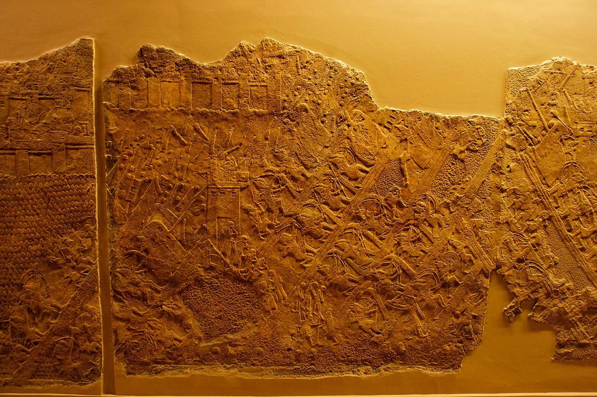
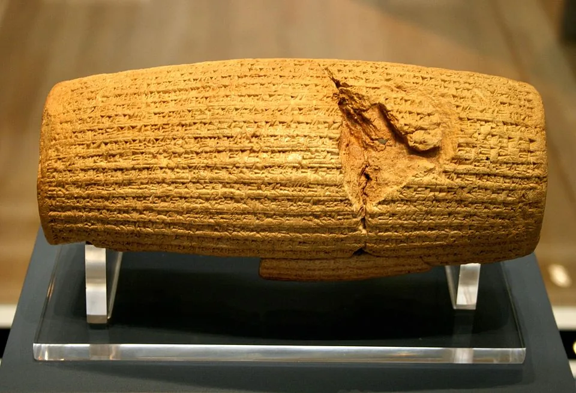
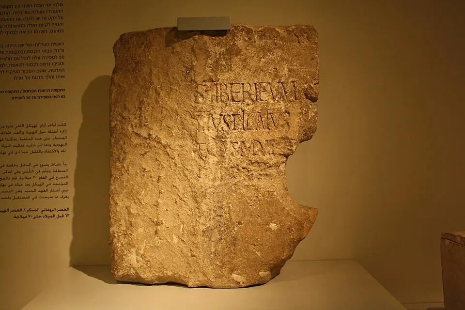

Choose a doorway into the story
You do not need to know the kings or prophets first.
Four ideas to carry with you
God: holy, merciful, patient and sovereign over empires.
Sin: distrust that grows into idolatry, injustice and social harm.
Covenant: relationship with promises and responsibilities.
Hope: judgment is real, but restoration and new creation are the final horizon.



The whole story—every lens aligned
All layers remain visible at every learning level. Click a history cell to enter that period; click any prophet, Psalm, passage, evidence item, motif or theological truth to open its full resource.
HistoryPowerProphetsPsalmsPassagesEvidenceEschatologyGod / sin
Focus without hiding:
How to read it: each vertical column is one period. Read downward to see what happened, who held power, which prophets spoke, which Psalms and passages belong nearby, what evidence survives, how eschatological hope develops, and what the period reveals about God and sin.
↔ Scroll sideways through history↕ Scroll down through the lensesSelected period is outlined across every row